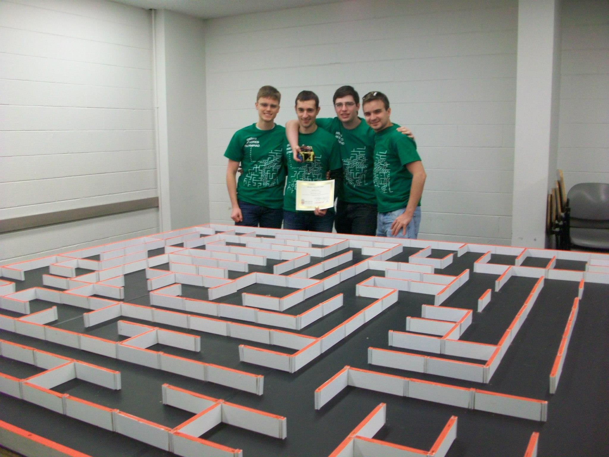

About
Yale Robotics Undergraduate Student Organization (colloquially Bulldog Bots) is devoted to designing and building robots for competitions involving technical engineering design and construction. Founded in the spring of 2012, Bulldog Bots is Yale's only robotics undergraduate student organization. We design, test and build robots of many different varieties, from simple solar powered speeders to armored combat robots. There are dozens of different robotics competitions around the United States where college students, hobbyists, and corporate teams build robots that push the boundaries of autonomous programming and vehicle design. We compete in several of these events, while maintaining a tradition of strong contest entries. These venues provide an arena to present our work, interact and learn from other teams, and ultimately apply knowledge from the classroom to a practical scenario. Furthermore, Bulldog Bots fully supports the advancement of the culture of engineering on Yale's campus. We ultimately endeavor to enrich the experience of our members and spread excitement for robotics to the entire university.